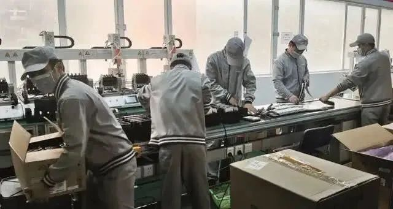

监控：口罩概念股搜于特十天八涨停，董事长亲属借机套现
原文链接 备份链接 搜于特现主营业务为品牌服饰运营和供应链管理。其近期股价上涨和公司公告拟投产生产口罩相关。然而公告发布近1个月后，公司相关产品仍未投产。同时，在公司股价上涨后，公司股东则开始减持 文 |《财经》记者 杨秀红 张建锋 编 …

三星将希望寄托于在越南的生产大本营，但越南的产能状况却比想象中要艰难，此时高度考验三星的国际供应链管理能力

文 |《财经》记者 陈潇潇
编辑 | 谢丽容
三星正面临前所未有的煎熬。三星电子披露的2019年度财报显示，2019年三星电子净利润185亿美元，同比下滑51%，营收1956亿美元，同比下滑5.5%，创2016年以来的最低值。其中三星移动业务利润同比下降了8.3%。
为提振业绩，三星在财报中表示，2020年将发布多款高端旗舰机，同时加强5G阵容，提高中低端手机的竞争力。
但现在疫情打乱了生产计划。
据《财经》记者了解，由于疫情泛滥，三星位于中国及东南亚的生产基地皆受到不同程度的影响。智能终端研发设计公司（ODM）华勤的一位销售人士对《财经》记者表示，此前由于产能尚处恢复期，三星曾将其部分产能转移，以缓解压力。
去年11月，三星关闭了位于中国惠州的最后一家手机制造工厂。此后，三星将总体20%的出货量外包给了中国ODM巨头闻泰和华勤，后者为三星生产成本均价在60美金左右的中低端系列手机。截至3月14日记者发稿前，华勤相关人士向《财经》记者称，目前工厂已复工九成。
为三星制造高端手机的韩国龟尾工厂也处于停产状态。该工厂原本计划生产今年主打的高端旗舰折叠手机Galaxy Z Flip以及Galaxy S20。今年2月该工厂有员工感染新型冠状病毒，此后在工厂内部造成新的感染，截至目前龟尾工厂已有六名员工确诊。为确保疫情不再继续扩散，3月10日，三星宣布龟尾工厂关闭。
突如其来的生产变化，无疑雪上加霜。为解决出货问题，三星将希望寄托于其在越南的生产大本营。但越南的产能状况却比想象中要艰难。
超千名工程师难进越南，物料跟不上
三星已试图将龟尾及中国代工厂的部分订单转移至越南生产。越南是目前三星在全球最大的制造基地，生产超过一半的三星手机。前述华勤人士对《财经》记者表示，代工厂已按照三星的要求将所需零部件和半成品发往越南。
但据《财经》记者了解，按照目前越南的生产条件，三星想要在短期内完成更多订单，挑战很大。这并不是三星的个性问题，是整个越南制造业的问题。越南工业和贸易部在一份声明中表示，汽车、电子产品和手机制造商在获取供应和材料方面遇到了困难。
一位接近三星的供应链人士告诉《财经》记者，新增订单要求新增产线和工程师，需接近1000个工程师从韩国来越南本地支援。但自3月韩国疫情升级后，越南政府突然加强了对韩国的出入境管制政策。这些工程师需要进行14天以上的隔离观察，影响工期，《财经》记者获悉，三星期间多次向越南政府要求取消隔离政策，僵持数十天后，至 3月13日晚间，越南政府打算放行。
另一方面，疫情已导致中越的进出口物流严重受阻。春节过后，中越最大贸易关口友谊关以及二级口岸先后关闭。虽然目前以每日限流的方式逐渐恢复，由于此前的一个月内堆积了太多货物，导致运输拥挤，交付效率很低。
许多供应商在越南的库存只能撑2到4周。这其中包括摄像头在内的关键元器件。一位供应链人士对《财经》记者表示，舜宇光学本是三星的摄像头模组供应商，由于国内复工率仅为30%，三星无奈之下已经开始更换供应商。
尽管越南当地有上万家三星的供应商，但30%的材料依然要从中国进口。就算手机可以完成组装，但由于缺少插头、线缆，甚至包装盒上的打印标签，都无法顺利出货。
据《财经》记者了解，包括蓝思、伯恩在内的越南本地配套工厂都因原材料供给问题，产能来不及恢复正常。“就算订单都转过来，越南这边也消化不了。”一位三星在越南本地的二级供应商对《财经》表示，他为三星手机提供包材和印刷服务。
跟许多本地供应商一样，受产能影响，三星目前下发的订单并没有增加，且数量随时都在变动。他预计第一季度订单会比原计划损失三分之一。
生产转移容易，供应链转移难
根据市场调研机构counterpoint数据，2019年三星手机以2.96亿台的销量位居全球第一，紧随其后的是华为，出货量约2.4亿台，苹果手机出货量1.9亿台，排名第三。尽管手机销售量多年蝉联第一，但财报显示，2019年三星移动业务利润同比下降了8.3%。
利润下滑的原因不难理解。2019年三星用于营销和推广等运营费用支出增长了5.5%，但为公司带来核心利润的高端旗舰机销量却表现乏力。
据市场调研机构counterpoint数据，2018年包括Galaxy S9、GalaxyS9 plus等多款三星高端旗舰手机进入了全球高端手机销量前十。但到了2019年，入榜的三星手机分别是Galaxy A50、Galaxy A20和Galaxy A10，都是中低端机型。
事实上，2019年三星推出了六款Galaxy高端旗舰机，包括S系列四款，Note系列一款，以及全新的折叠屏产品线，但没有一款入榜。相较之下，苹果的iPhone 11 及iPhone 11 pro都进入了销量单品前十。
为了优化利润结构，过去几年三星一直在加速制造基地的转移，以进一步降低生产成本。
自2009年起，三星已在越南设下8个工厂和一家研发中心，总投资超过173亿美元，占越南出口总值的五分之一。财报显示，2018年越南为三星加工的电子销售额高达657亿美元，约占三星全球电子销售额的30%。
去年10月三星关闭在中国所有的手机组装工厂后，又进一步将产能转移至越南，尤其是高端手机组装部分。
不过转移生产容易，转移供应链却很难。这是因为手机产业链太长，想要在中国以外的国家建立全产业链几乎不可能。这意味着即使能节省成本，对冲风险的能力也十分有限。
据《财经》记者了解，越南本地60%以上的供应链企业服务于三星，但完成的基本都是粗加工部分。歌尔、瑞声科技都是三星的核心供应商。2012年起，三星要求这些一级供应商必须在越南当地设厂，以保证能够快速反应。
但电子产品的供应链是一个网状结构，一级供应商下面还有二级供应商以及诸多的配套环节。歌尔的当地负责人对《财经》表示，80%以上的材料都靠进口，越南本地只完成组装工作。这是因为越往供应链的前端走，就越难转移，尤其是零部件。
据《财经》记者了解，去年十月，三星关闭其惠州工厂后，将与之配套的一家韩国螺丝厂转移至了越南。但这家螺丝厂的其余中国配套厂商却很难一起转移，因为所需的塑胶、钢材等原材料越南当地均无法生产。这样一算，物流运输加之在越南当地设厂的费用，成本和风险都非常高。
不过，由于中美贸易摩擦的影响，过去一年以来，这些前端供应链企业也开始加速往海外转移。综合多家供应链企业的观察，对于巨头而言，未来最安全的方式是在多个国家分别做供应链的布局。
【版权声明】本作品著作权归《财经》独家所有，授权深圳市腾讯计算机系统有限公司独家享有信息网络传播权，任何第三方未经授权，不得转载。


▲点击图片查看更多疫情报道
责编 | 蒋丽 lijiang@caijing.com.cn
本文为《财经》杂志原创文章，未经授权不得转载或建立镜像。如需转载，请在文末留言申请并获取授权。
原文链接 备份链接 搜于特现主营业务为品牌服饰运营和供应链管理。其近期股价上涨和公司公告拟投产生产口罩相关。然而公告发布近1个月后，公司相关产品仍未投产。同时，在公司股价上涨后，公司股东则开始减持 文 |《财经》记者 杨秀红 张建锋 编 …
原文链接 备份链接 以下文章来源于财经十一人 ，作者王凤 [财经十一人 由《财经》杂志公司产业报道团队创建，研讨企业成败，探究行业兴衰，推动阳光商业](#) 库克在公开信中引用了林肯的话说：“困难重重，我们必须与时俱进。因为我们面临的问题 …
原文链接 备份链接 不上班就得吃老本，我们没钱吃啥老本 口述者：刘兴（化名） 打工所在地：北京 编者注：刘兴，51岁，1988年从内蒙农村来京打工，右眼失明，左眼白内障，因手术风险较大无法做手术。现在做车管员工作。妻子36岁，智力二级残 …
原文链接 备份链接 文 |《巴伦周刊》中国撰稿人 郭力群 编辑 | 康娟 新冠肺炎疫情爆发后，中国部分经济活动一度陷入停滞，这一点从近期公布的经济数据中就能看出。中国海关总署3月7日发布的数据显示，今年前两个月，中国进出口总值5919.9 …
原文链接 备份链接 作者 | 黎明 编辑 | 魏佳 果农周金桥做好最悲观的打算：脐橙要是卖不出去，就把城里的房子卖了。总得活着。 他生活了近50年的秭归县牛岭村，随着湖北省，成了中国新冠病毒疫情版图上颜色最深的那一块。疫区转眼成了禁区， …